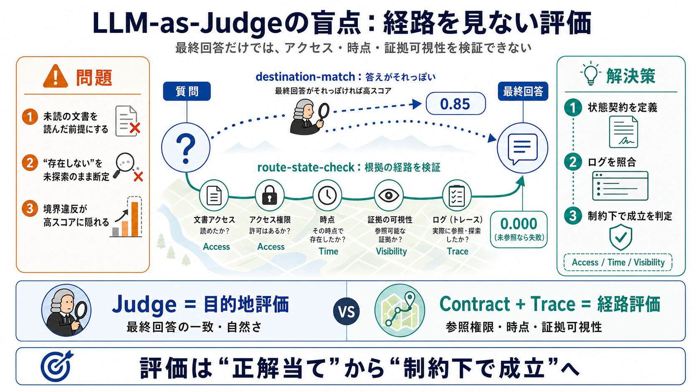

LLM-as-Judge Got Us This Far. Here Is What 2026 Adds to the Toolkit.
Agent-as-Judge is essentially an evaluation system with the same capabilities as the system being evaluated. It can veri…

LLM-as-judge（LLMに採点させる方式）だけに頼ると、「何を読めたか／読めなかったか」という根拠の経路（trajectory）が検査できません。
その結果、境界違反（アクセス権・時点・証拠可視性）を見逃す評価が起きます。根拠の経路 = trajectory（軌跡）
judgeは多くの場合、最終回答が期待回答と一致するか（destination一致）だけを見ます。
地図が一致していても、その道中が正しいとは限りません。評価も同様に「経路（route）」を見ないと誤りが潜みます。
biling: destination = 目的地 / route = 経路 / contract = 契約
ケーススタディでは、2つの最先端judge modelが同一応答に0.85点を付けました。
一方、追跡ログ（trace）に基づく評価（GroundEvalの考え方）では0.000点になります。
「存在しない」という主張（absence claim）が成立するには、本来“あり得る場所”を検索して否定を裏取りする必要があります。
最終回答が“正しい文章に見える”だけでは、再現性や安全性の要件（アクセス権・時点・可視性）を満たした保証になりません。
既存のトラジェクトリ評価（ツール順序チェック等）は存在しても、状態の正当性（ガバナンス/状態境界）までは自動検証しないことがあります。
解決策は「より良いjudge」ではなく、決定論的な状態契約（deterministic state contract）を先に書きます。
judgeは目的地一致、契約は経路妥当性。評価の問い（what we ask）を分けることで、抜けを埋められます。
リーグ表の高スコアがあっても、境界違反がスコアに現れないことがあります。評価は「正解当て」から「制約下で成立」を測る方向へ拡張すべきです。
本稿の主題は、LLM-as-judgeの限界と、traceベース（GroundEvalの考え方）の必要性にあります。
※ユーザー提示文の範囲では、具体的な論文URL・著者名は含まれていません。必要なら、参照すべき一次情報（論文/ブログ/リポジトリ）を追記する形で再構成します。
Agent-as-Judge is essentially an evaluation system with the same capabilities as the system being evaluated. It can veri…
# How I Built Deterministic LLM Evaluation Metrics for Production. A first-person write-up: why a $40K judge bill pushed…
# LLM-as-a-Judge in 2026: Top evaluation techniques and best practices. LLM-as-a-Judge uses an LLM to score, classify, o…
# Beyond the Leaderboard: The Limitations of LLM Benchmarks and the Case for Real-World Clinical Evaluation[v1] | Prepri…
In particular, the introduction of LLM-as-a-judge has redefined evaluation by enabling scalable, model-based assessment …